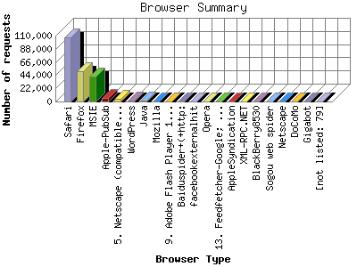

The Browser Summary identifies the most popular web browsers used to visit
this site.
Browsers are broken down by recognized categories such as
Netscape Navigator/Communicator, Microsoft Internet Explorer, WebTV, Opera
and the like. Within each category is also a subgroup by version number
such as 'MSIE 5.0' or 'Netscape 4.5'.
This report shows the first 20 results by number of requests. This report is sorted by number of requests.

| Browser Type | Number of requests | |
|---|---|---|
| 1. | Safari | 107,655 |
| 2. | Firefox | 50,171 |
| 3. | MSIE | 42,167 |
| 4. | Apple-PubSub | 5,655 |
| 5. | Netscape (compatible) | 3,733 |
| 6. | WordPress | 1,630 |
| 7. | Java | 1,112 |
| 8. | Mozilla | 710 |
| 9. | Adobe Flash Player 10 | 607 |
| 10. | Baiduspider+(+http: | 440 |
| 11. | facebookexternalhit | 421 |
| 12. | Opera | 287 |
| 13. | Feedfetcher-Google; (+http: | 281 |
| 14. | AppleSyndication | 263 |
| 15. | XML-RPC.NET | 73 |
| 16. | BlackBerry8530 | 63 |
| 17. | Sogou web spider | 33 |
| 18. | Netscape | 32 |
| 19. | DoCoMo | 26 |
| 20. | Gigabot | 24 |
| [not listed: 79] | 401 | |
This report was generated on June 7, 2011 10:17.
Report time frame November 28, 2010 00:33 to June 6, 2011 23:31.
| Web statistics report produced by: analog 6.0 / Report Magic 2.21 |